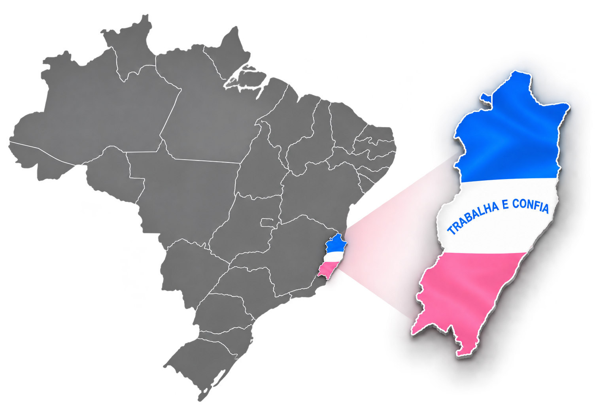

03 • UNIDADES
Presença,
formação e compromisso.
Conheça a rede do Projeto Jovem Militar e acompanhe sua presença e expansão.
REDE PJM
Onde o Projeto
está presente.
Uma rede construída para levar formação, disciplina e cidadania a diferentes municípios.

UNIDADE SELECIONADA
São Mateus — Espírito Santo
Unidade vinculada ao Comando Geral do Projeto Jovem Militar.
Unidade ativa Em futura expansão